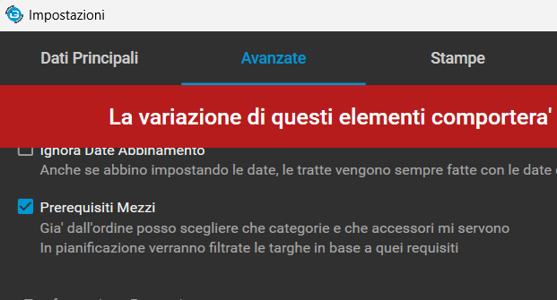
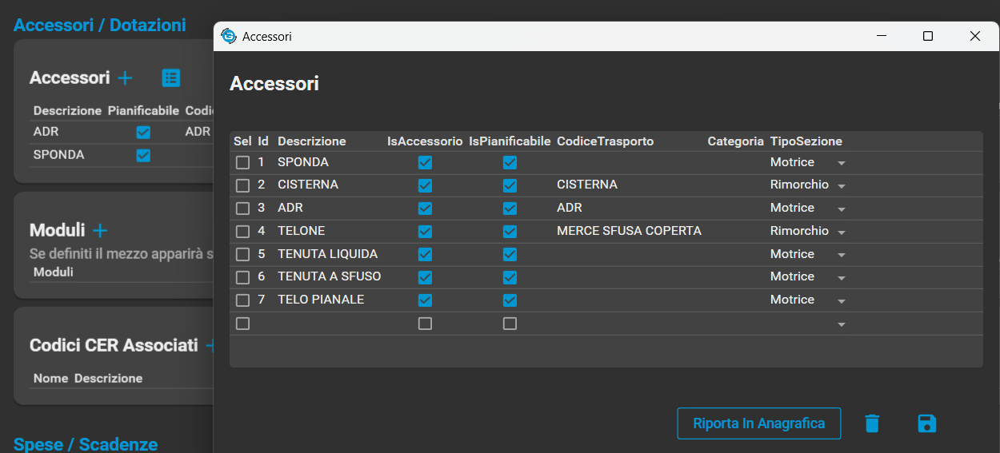
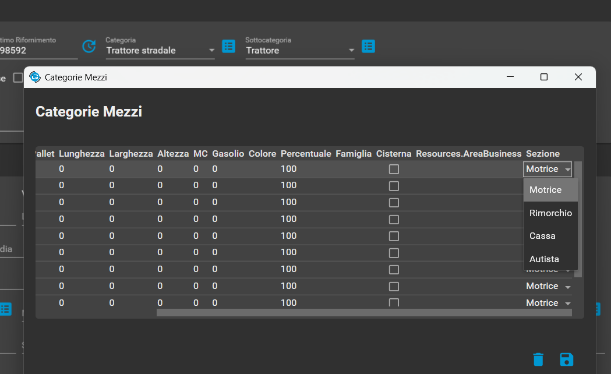

Questa documentazione illustra il funzionamento del sistema di filtraggio dei mezzi. L'obiettivo è aggiornare in tempo reale le liste di motrici e rimorchi disponibili in base ai requisiti (accessori e categorie) selezionati dall'utente.
Per attivare questa procedura e' necessario entrare nelle impostazioni di base e spuntare Prerequisiti Mezzi
Perche' tutto funzioni e' necessario che le categorie dei mezzi siano impostate correttamente e siano divise tra mezzi e rimorchi
Questo si puo' definire nelle anagrafiche del mezzo
Negli accessori
Nelle categorie
Salva i dati nella tabella ElencoRichiesteAccessori associando la conferma madre ai
possibili accessori
AggiornaAccessoriOrdine()Scopo: Popola dinamicamente l'interfaccia con le checkbox degli accessori. Quando un ordine viene caricato, questo metodo disegna due liste separate di accessori (una per la motrice, una per il rimorchio) e preseleziona quelli già associati all'ordine.
SalvaAccessoriOrdine()
Scopo: È il gestore del salvataggio. Non esegue direttamente le
operazioni sul DB, ma delega il lavoro al metodo specializzato
SincronizzaAccessoriPerTipo(), chiamandolo una volta per la motrice e una
per il rimorchio.
SincronizzaAccessoriPerTipo()
Scopo: Sincronizza in modo efficiente gli accessori di un tipo di mezzo
(motrice o rimorchio) tra UI e database.
Confronta lo stato delle checkbox con i record esistenti, calcola le differenze (cosa
aggiungere e cosa rimuovere) ed esegue solo le operazioni necessarie, garantendo che
ogni record salvato abbia il corretto TipoSezione.
Salva i dati nella tabella ElencoRichiesteCategorie, associando alla conferma madre le
categorie e sottocategorie richieste.
AggiornaCategorieOrdine()Scopo: Prepara le checkbox per le categorie e le sottocategorie, smistandole in due pannelli distinti e preselezionando quelle già associate all'ordine.
FiltraSottocategorieVisibili()Scopo: Migliora l'usabilità mostrando solo le sottocategorie pertinenti. Se una categoria principale viene selezionata, questo metodo rende visibili solo le sottocategorie ad essa collegate, nascondendo le altre.
SalvaCategorieOrdine()Scopo: Salva lo stato di entrambi i pannelli (categorie e sottocategorie). Unisce tutte le selezioni e, tramite la logica "calcola differenze", aggiorna il database.
AggiornaListeMezzi()Il Cuore del Sistema
Questo metodo è il motore centrale dell'intera funzionalità. Viene eseguito ogni volta che una qualsiasi checkbox cambia stato, garantendo un'esperienza utente reattiva e in tempo reale.
La sua logica si articola in quattro fasi sequenziali:
Raccolta Requisiti: Legge lo stato di tutte le checkbox attive nei vari pannelli (accessori motrice/rimorchio, categorie, sottocategorie).
Preparazione Dati: Carica le liste complete di tutte le motrici e i rimorchi disponibili.
Filtraggio a Cascata: Applica i requisiti raccolti in sequenza. Ad esempio, prende la lista dei mezzi, la filtra per accessori, poi sul risultato applica il filtro delle categorie, e così via.
Aggiornamento UI: Le liste finali di motrici e rimorchi idonei vengono caricate nelle rispettive ComboBox, mostrando all'utente solo le opzioni valide.